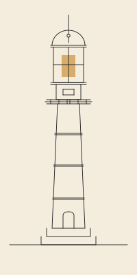

The Integrated Business Growth Playbook
How modern systems work together to attract attention, earn trust, and convert customers. explained the way we'd explain it to a friend over coffee.
A note before you begin
Most marketing advice is fragmented. Someone tells you to post more on Instagram. Someone else tells you email is dead, then someone else swears it's the only thing that works. You end up doing a little of everything, doing none of it well, and wondering why your phone isn't ringing.
This playbook takes a different approach. It treats your business as an ecosystem and your marketing as a system of interconnected parts. Each pillar can produce results on its own. None of them produce sustainable, compounding results in isolation.
Anyone can make short, quick strides. To win the long game, every part has to work together.
Read this carefully. Mark it up. Come back to it. Then build slowly and consistently.
Where are you strongest?
Rate each of the eleven pillars from 1 (weak / non-existent) to 4 (strong / consistent). We'll suggest which Part to read first.
One moment. leave an email and we'll send your reading order along with the next Part each week. We won't share it. You can leave at any time.
Prefer to dive in? Start at Part 1. Foundation → The whole playbook is free, no email required.
Why systems beat tactics
Tactics spike attention. Systems sustain a business. The difference is everything.
Tactics are individual actions. A post. An ad. A flyer. A booth at a festival. Tactics can spike attention but they cannot sustain a business. Systems are how tactics connect to each other so the energy you spend in one place produces results in another.
Think of it like an orchestra. A single trumpet playing a perfect note isn't music. Music happens when every instrument is playing in time, in key, and in service of the same song. Your business marketing works the same way. One pillar firing alone produces noise. Pillars firing together produce momentum.
The three movements of modern marketingcopy link
| Movement | What it does | Where it lives |
|---|---|---|
| Awareness | People have to know you exist. | Social, paid ads, PR, events, signage, vehicle wraps, creators |
| Conversion | People have to take a clear next step. | Website, landing pages, funnels, QR codes, in-person capture |
| Nurture | People rarely buy on the first encounter. | SMS, email, referrals, loyalty, consistent content |
Every pillar in this playbook serves one or more of these movements. A weakness in any movement collapses the others. You cannot nurture leads you never captured. You cannot convert traffic that never arrived. You cannot earn awareness if your brand looks unprofessional the moment someone notices you.
The compounding effect
Most business owners want results fast. Modern marketing rewards the opposite. The systems in this document are designed to compound. Month one feels slow. Month three starts to show. Month twelve produces results that look impossible to people who quit at month two.
Consistency beats intensity. Showing up well every day for a year will outperform a brilliant burst of effort followed by silence. Build for the long horizon.
The eleven pillars covered in this playbook
- Brand and visual identity (logo, colors, slogan, vehicle wraps, signage)
- Social media and platform strategy
- Content systems and posting cadence
- PR and earned media
- Events (hosted and attended)
- Creator and influencer partnerships
- Website and user experience
- Landing pages and conversion funnels
- In-person lead capture (QR codes, signage, business cards)
- SMS and email nurture systems
- Referrals, reviews, and loyalty
We build the orchestra, not the trumpet
Most agencies sell a single instrument. social posts, ads, a website. We don't. 1Coast Media builds the integrated system where awareness, conversion, and nurture all reinforce each other. We start by mapping which of the eleven pillars you have, which are weak, and which are missing. Then we build in the right order so each new pillar makes the previous ones stronger.
If you only need a single piece, we'll tell you. If we're not the right fit, we'll point you to who is. No templates. No fluff. Just results.
Before Part 2, do this
Five minutes. Honest answers. Saved to your browser as you check items off.
What people see before they hear you
A polished brand makes every other dollar work harder. A weak brand makes every other dollar work less.
Before any of the digital systems in this playbook can work, your brand has to look like a business worth paying attention to. Branding is not vanity. It is the visual signal that tells a stranger whether you take your work seriously enough for them to take you seriously.
The logo
Your logo is a flag, not a portrait. It needs to be recognizable at thumbnail size on a phone screen, readable on the side of a vehicle from across a parking lot, and clean enough to embroider on a hat or stitch into a uniform.
What you need, practically
- A primary version (full logo with brand name)
- A secondary mark (icon only, for small spaces like social profile pictures)
- A horizontal version (for headers and email signatures)
- A stacked version (for square and vertical applications)
- Both light and dark color versions
- A black-and-white version for printing where color isn't possible
- Vector files (SVG, AI, EPS) for any printer or sign maker, plus PNG with transparent background for digital
Color palette
Pick a primary color, one or two supporting colors, and one accent. Use them consistently everywhere. The reason national brands feel familiar isn't that you love them. it's that you've seen the same colors a thousand times. You can manufacture that familiarity for a local business with discipline.
Document the exact hex, RGB, CMYK, and Pantone values. Hand them to anyone who touches your brand.
Typography
Pick a primary font for headlines and a secondary font for body copy. Keep it to two. Make sure both render well on web, on print, and on signage. Avoid trendy fonts that will look dated in two years.
The slogan
A great slogan is short, true, and yours. It should communicate either what you do, who you do it for, or what feeling you create.
What makes a slogan work
- Six words or fewer is ideal. Twelve is the absolute ceiling.
- It passes the eavesdrop test. If a customer overheard it without context, it should still make sense.
- It makes a promise you actually keep. Slogans that overpromise damage trust faster than no slogan at all.
- It works in writing and out loud. Read it. Say it. If it sounds awkward, rewrite it.
Roofing. "Built right. Built once."
Restaurant. "Family-owned. Coast-grown."
Cleaning. "We clean what other crews skip."
Real estate. "Local roots. Honest answers."
Plumbing. "On time, every time, or it's free."
Vehicle wraps and signage
A wrapped vehicle is the most cost-efficient billboard a local business can own. It works while you drive to lunch, while it sits in a customer's driveway, while it's parked at a job site. Done well, it produces leads for years. Done poorly, it advertises that you cut corners.
Wrap rules that actually matter
- Phone number and website must be readable from at least 30 feet
- One simple value statement, not a list of services
- Brand colors and logo dominate; resist the urge to crowd
- QR code on the rear panel (the panel cars behind you can scan)
- Match the wrap to the rest of your visual identity
Uniforms and team appearance
If your team interacts with customers, what they wear is part of your brand. A clean polo with an embroidered logo costs little and signals professionalism that no website can match. A torn t-shirt and faded cap signal the opposite, no matter how good your work is.
Storefront and signage
If you have a physical location, your sign is doing brand work twenty-four hours a day. Make sure it's lit at night. Make sure the lettering is current. Make sure the colors match your digital presence. The most common branding mistake we see is a business with a beautiful website and a faded, mismatched sign out front. The two should look like the same company.
We build brands that hold up across every surface
1Coast Media builds the full visual system. logo suite, color palette, typography, slogan, photography direction. and we apply it everywhere it shows up. Vehicle wrap, storefront sign, polo embroidery, business cards, social profile, email signature, invoice template. Every surface a customer sees should feel like the same business.
Our brand engagements end with a single PDF brand guidelines document and a folder of logo files in every format you'll ever need. Hand it to a printer, a sign maker, a new hire. they'll know exactly what to do.
Brand layer audit
Walk around your business. physical and digital. and answer honestly.
Getting noticed, the right way
Six pillars produce awareness: social, content, PR, events, creators, and paid ads. Each rewards consistency more than cleverness.
Awareness is the first movement. people have to know you exist before anything else can happen. The temptation is to chase whichever platform is loudest this month. Resist it. Awareness compounds when you pick a small number of channels and show up there every single week, for years.
3.1 Social media
You don't need to be on every platform. Pick two primary platforms where your customers actually spend time, plus one experimental platform where you're learning. For most local Gulf Coast businesses, the answer is some combination of Instagram, Facebook, TikTok, YouTube, and (for B2B) LinkedIn.
Choose by where your customers are, not where you are
A 60-year-old roofing customer is on Facebook, not TikTok. A 28-year-old salon customer is on Instagram and TikTok, not Facebook. Pick where they are.
Cadence beats brilliance
The single most important rule: pick a number and post that exact number every single day. The algorithm rewards consistency. Your audience trains itself to your rhythm. Spammy bursts followed by silence trains them to ignore you.
Three posts a day every day will outperform ten posts on Monday and zero for the rest of the week. The math works because the platform learns your release schedule and starts pushing your content right when your audience is ready for it.
Most local businesses should start at 1 to 2 posts a day on their primary platform. If you can sustain 3 a day, every day, forever, that's the sweet spot for an active small business. The right number is the one you can hold through a busy season, not the one that sounds impressive in month one.
Use a scheduler. Buffer, Later, Metricool, or your platform's native one. Schedule a week ahead so a busy day, a sick kid, or a slow internet connection doesn't break your rhythm.
3.2 Content systems and posting cadence
The single biggest reason businesses give up on social is that they treat each post like a one-off creative act. You will run out of energy. Build a content system instead.
Content pillars
Pick three to five content pillars. recurring categories of content that align with your business. A roofer's pillars might be: (1) Recent jobs, (2) Education ("how to read your roof"), (3) Storm prep, (4) Behind the scenes, (5) Customer stories.
Batch production
Block one production day on a recurring schedule and hold it. The right interval depends on your cadence and who's helping you produce:
- One day a week if you're posting 3 or more times a day, or if you have a team that can edit fast
- One day every two weeks if you're posting 1 to 2 times a day and editing yourself
- One day a month if you have a partner like 1Coast Media producing for you in higher-volume sessions
Daily content production is unsustainable for almost everyone. Pick the longest interval you can get away with at your cadence, then hold it religiously.
3.3 PR and earned media
Earned media. coverage in local newspapers, TV, podcasts, and blogs. carries more trust than any ad you can buy. It's also free. The catch is that it requires a story worth telling.
Stories that get covered
- You hit a milestone (10 years, 1,000th customer, expansion)
- You did something for the community (sponsored a school team, donated services)
- You took a contrarian position on something local (and can defend it)
- You have data nobody else has (a survey of your customers, trends you've noticed)
- You're an expert source on a story already breaking
Build a list of five local journalists or podcast hosts who cover your industry. Send them a useful tip every quarter. When you have your own story, they'll already know your name.
3.4 Events. hosted and attended
Events compress months of trust-building into a single afternoon. Attended events put you in front of new audiences. Hosted events put you at the center of one.
Attended events
Festivals, farmers' markets, chamber events, charity runs. Show up with a presence: a branded tent, signage, a way to capture leads (QR code on a clipboard sign), and a small giveaway. Don't try to sell. try to be remembered.
Hosted events
Host one event per quarter, on the same calendar dates each year. A roofer can host a "Storm Prep Saturday" before hurricane season. A salon can host a styling night. Make it useful, make it shareable, make it consistent. Year three of a hosted event is when it becomes a tradition.
3.5 Creator and influencer partnerships
National influencers are expensive and irrelevant to a local business. Local creators. micro-influencers with 1,000 to 50,000 followers in your zip code. are where the real leverage is. Their audiences trust them. Their audiences live in your service area. Their rates are reasonable, and many will partner for product or service exchange.
Picking creators
- Audience location actually matters more than audience size
- Engagement rate (comments + saves, not just likes) matters more than follower count
- Tonal fit with your brand matters most of all. the wrong creator damages trust
- Look for creators who already mention places like yours organically
3.6 Paid ads
Paid ads are the awareness lever you can scale on demand. Organic content compounds over years. Ads compound over weeks. Both belong in your awareness mix; together they make a much stronger one.
Where to spend
For local businesses on the Gulf Coast, the highest-leverage platforms are usually Meta (Facebook + Instagram), Google Local (Search + Maps), and increasingly TikTok and YouTube. Don't try all four at once. Pick one, prove it works, then add the next.
The boost-then-scale rhythm
The simplest place to start is to boost your best-performing organic posts. A post that already earned engagement organically is the cheapest test of paid amplification. Once you find a post that performs as a boost, build a proper ad campaign around it with retargeting and lookalike audiences.
Track what works
Set up the Meta pixel and Google tag on your site before you spend a dollar. You cannot optimize what you cannot measure. Run for at least 30 days before judging results. Most ads need iteration, not abandonment.
We run the awareness engine for you
1Coast Media builds and operates the full awareness system: content pillar strategy, batched production at the cadence that fits your business, multi-platform posting, paid ad management, PR pitching, event presence kits, and creator partnerships with our local Gulf Coast roster.
We don't lock you into one production rhythm. Our packages scale from once-a-month shoot days for businesses just starting out, all the way to weekly production for brands that need constant fuel. You pick the volume. We build the pipeline.
Because we work with local creators every week, we know who's reliable, who's on-brand, and who has the audience you actually need. Our creators are paid fairly. Our businesses get authentic coverage. That's how we elevate the Coast.
Build the awareness rhythm
Pick a rhythm you can hold for twelve months. not the rhythm that sounds impressive.
Turning attention into action
Awareness without conversion is a popularity contest. Conversion without awareness is a beautifully empty room.
Once people know you exist, they need a clean, fast, obvious way to take the next step. Every friction point is a customer lost. Every confused page is a phone call that never happened.
4.1 Your website
Your website is your storefront for the 90% of customers who will check you out before they ever call. If it's slow, ugly, or confusing, you've lost them before they ever met you.
Non-negotiables for any local business website
- Loads in under three seconds on a mobile connection
- Phone number visible in the top right corner of every page, click-to-call on mobile
- One clear primary action above the fold ("Get a quote", "Book now", "Call us")
- Location (city, zip codes you serve) visible without scrolling
- Real photos of you, your team, your work. not stock photography
- Reviews and testimonials with names and faces, not anonymous quotes
- Mobile design that's tested on an actual phone, not a desktop browser pretending to be one
4.2 Landing pages
A landing page is a single-purpose page built for a single offer. Your homepage tries to serve every visitor. A landing page serves one campaign, one audience, one message. You should have a different landing page for every different offer you run.
Anatomy of a landing page that converts
- One headline that names the customer's problem in their words
- One photo that proves you're real
- Three to five reasons to trust you (years in business, customers served, awards, certifications)
- One clear next step (form, call button, calendar link)
- No navigation menu. nothing to click except the next step
- Social proof near the action button (review, testimonial, logo wall)
4.3 Conversion funnels
A funnel is the series of small steps a customer walks through from "stranger" to "repeat buyer." Most local businesses don't have a funnel. They have a leaky bucket where most leads disappear at every step. Walk your own funnel out loud, stage by stage, and close every leak.
1. Stranger → Visitor
Goal: Get noticed in their feed, on Google, or on the road, often enough that your name registers.
Common leak: Posting in bursts and going silent. No recognizable visual look. No clear reason to click.
Fix it with: A daily cadence on one or two platforms plus a single, specific call to action in every post, bio, and ad ("Text us at...", "Book at...", "Visit our showroom at...").
2. Visitor → Lead
Goal: Land on your site or storefront and take one specific next step (form fill, call, text, booking, walk-in).
Common leak: Slow website, no obvious next step, generic homepage with five competing CTAs, or an offer that asks too much too soon.
Fix it with: One single CTA above the fold. A lead magnet or quick-win offer in exchange for a phone or email. Mobile speed under three seconds.
3. Lead → Prospect
Goal: Get them to engage with the first follow-up so you have a conversation, not a contact card.
Common leak: Slow first response (over an hour). Generic "thanks for your interest" emails. No actual question or hook in the first message.
Fix it with: Auto-text or auto-email within 5 minutes that opens with a real, specific question, not a script. Personal follow-up from a human within the first hour during business hours.
4. Prospect → Customer
Goal: First purchase, first booking, or first signed contract.
Common leak: Friction at checkout or scheduling. Confusing pricing. No obvious "yes" path. Asking for too much information up front.
Fix it with: One-click booking with a calendar tool. Clear pricing or a clear "starting at." Pre-filled forms wherever possible. The fewer fields, the more closes.
5. Customer → Repeat
Goal: A second purchase, a referral, or a public review.
Common leak: Zero post-sale communication. The customer goes silent because you went silent.
Fix it with: An automated post-service text or email asking for a review with a direct link. A monthly customer-only newsletter or text. Surprise outreach two months in: "How is the X working out?"
4.4 In-person lead capture
Most local businesses have constant in-person opportunities to capture leads. and almost always waste them. The customer who walks into your shop, attends your event, or sees your booth at a festival is the warmest lead you'll ever get. Capture them.
QR codes done right
Place QR codes everywhere a customer's eye lands: receipts, signage, business cards, vehicle wraps, packaging. Each QR code should land on a specific page that knows what brought the visitor there. The QR on your truck should land on a different page than the QR on your business card. Track every scan.
Business cards as portable landing pages
A traditional business card is a name and number. A modern business card is a tiny landing page in a pocket. Front: your name and one clear value statement. Back: a QR code to your booking page or top offer. Hand them out aggressively. They cost cents. They produce calls.
4.5 Reviews and Google Business Profile
Your Google Business Profile (the listing that appears in the right rail when someone searches your business) is your second-most-important conversion asset after your website. sometimes the first. Optimize it relentlessly.
- Photos updated quarterly (real ones, geo-tagged when possible)
- Hours always accurate, including holidays
- Services list complete and matched to what customers actually search for
- Posts published weekly (yes, Google rewards this)
- Every review responded to within 48 hours, positive and negative
- An automated post-service text or email asking for a review with a direct link
We close the leaks
1Coast Media builds and tests the full conversion stack: fast, mobile-first websites; campaign-specific landing pages; QR-coded touchpoints across vehicles, signage, and print; and review-request automations that turn happy customers into a steady flow of fresh five-star reviews.
We map your funnel on paper before we touch the website. Then we close the leaks one at a time, in order of how much money each one is costing you. Every dollar of awareness you spend should land somewhere that converts.
Conversion stack audit
Open your phone. Pretend you're a stranger. Try to give yourself money.
Where most of the real money lives
Most customers don't buy on the first encounter. The businesses that win are the ones who stay in front of them after.
Awareness gets you noticed. Conversion gets you the lead. Nurture is what turns leads into customers and customers into a community. It's also where almost every local business leaves the most money on the table.
5.1 SMS
Text messages have open rates of 95%+. Email open rates hover around 25%. SMS is the most direct, most respected, and most easily abused channel you have. Use it sparingly and well.
SMS rules that build trust
- Never message someone who didn't explicitly opt in
- Identify yourself in every message
- Send fewer than four messages a month unless transactional
- Make the unsubscribe path obvious. and honor it instantly
- Lead with usefulness, not promotion
What to actually send
- Appointment reminders (24 hours and 2 hours out)
- Order or service status updates
- Time-sensitive offers worth the interruption (limited stock, weather window, last few seats)
- Genuine community news (you're hosting an event, you sponsored a local team)
5.2 Email
Email isn't dead. Bad email is dead. Email is still the best long-term nurture channel: low cost, easy to segment, easy to automate, owned by you (unlike a social account that can vanish overnight).
The three email systems every business needs
- Welcome sequence. 4 to 6 emails over 14 days, automatic, sent to every new contact. Tells your story, sets expectations, delivers value, asks for the first action.
- Regular newsletter. weekly or bi-weekly, mostly useful content, occasional promotion. Builds the relationship.
- Segmented sequences. different paths for different customer types (new lead, past customer, VIP, lapsed customer). Each segment hears from you differently.
5.3 Referrals
Word of mouth is the most powerful customer acquisition channel ever invented. The mistake most businesses make is treating it as a happy accident instead of a system. Referrals can be engineered.
A referral program that works
- Reward both sides. the referrer and the new customer get something
- Make the offer easy to remember and easy to share (one sentence, one link)
- Ask at the moment of highest customer satisfaction (right after a great service, right after a five-star review)
- Make it personal. a hand-written card with a referral card beats a digital prompt every time for high-touch businesses
- Track everything so you know which customers are your real evangelists
5.4 Loyalty
A loyalty program isn't a punch card. It's a system for making your best customers feel like insiders. Done well, loyalty programs can double the lifetime value of an average customer.
Loyalty principles
- Make it digital and tied to your point-of-sale or booking system
- Reward frequency, not just spend
- Add small surprises. unannounced rewards beat predictable ones for emotional loyalty
- Give early access to new offers, events, and product drops
- Make members feel like a community, not a database
5.5 Reviews as nurture
Reviews aren't just a conversion asset (Part 4). They're a nurture asset. Responding to reviews. every single one, positive and negative. keeps you visible to the customer who left it and signals to every future customer that you actually pay attention.
We make sure no lead falls through the cracks
1Coast Media sets up the full nurture stack: SMS welcome flows, multi-email welcome sequences, segmented newsletters, referral program mechanics, and loyalty integrations with the systems you already use to take payments or book appointments.
We write the messages in your voice (after a working session with you). We segment your list properly. We hook up the automations. Then we step back and let the system pay you back month after month, while you focus on the work you actually love.
Nurture systems audit
Most businesses fail every one of these. Honest answers.
How every pillar feeds the others
A pillar standing alone is a pillar. A pillar wired to the other ten is a system. Systems compound.
The previous five Parts described the eleven pillars one at a time. This Part describes how they connect. The connection is where the leverage lives. Most businesses with strong individual pillars still underperform because the pillars don't talk to each other.
A worked example
Imagine a roofer who runs a hosted event called Storm Prep Saturday before hurricane season. Watch how every pillar feeds the next.
| Pillar | What happens |
|---|---|
| Brand | Branded event tent, signage, polos so the team is unmistakable |
| Social | Two weeks of pre-event teaser content across both primary platforms |
| Content | The event itself produces a quarter's worth of behind-the-scenes content |
| PR | Local TV and the paper get a press release with a free expert quote on storm prep |
| Events | The event runs on its scheduled Saturday, year over year |
| Creators | Two local creators attend and post coverage organically |
| Website | A landing page captures RSVPs and quotes prior to the event |
| In-person capture | QR codes on the tent, on signs, and on handouts feed into the system |
| SMS / email | Everyone who RSVPs is enrolled in a follow-up sequence with storm prep tips |
| Referrals | Attendees who book a roof inspection get a "bring a neighbor" double-reward offer |
| Loyalty | Past customers get early registration and a VIP tent |
One event activates eleven pillars. The marketing math is no longer "an event got us thirty leads." It's "an event got us thirty leads, six PR mentions, three months of content, two creator partnerships, a fully populated email list segment, a stack of new five-star reviews, and a measurable bump in repeat business." That's integration.
Three rules of integration
1. Every awareness asset has a conversion path
Every boosted social post, every ad, every billboard, vehicle wrap, event tent, and PR story should lead somewhere specific. A URL, a QR code, a phone number, an offer. Awareness without a conversion path is paid entertainment.
2. Every conversion has a nurture sequence
Every form submission, phone call, walk-in, or QR scan should trigger an automated nurture sequence. Without it, you're paying to acquire leads that never hear from you again.
3. Every customer becomes a content source
Every job, transaction, and customer interaction is content. Photograph it (with permission). Write about it (with permission). Quote it (with permission). The single greatest source of authentic content is the work you're already doing.
We wire the system, not just the parts
This is the difference between hiring eleven specialists and hiring 1Coast Media. We don't hand you a logo and walk away. We don't run ads in a vacuum. We build the wiring.
We map every awareness asset to a conversion path. We map every conversion to a nurture sequence. We instrument the whole thing so you can see, monthly, which pillars are pulling the most weight and which need attention. This is what "integrated" means.
Map your integrations
Pick one upcoming event, campaign, or seasonal push and map it across the eleven pillars.
A tool, not a replacement
AI is the most useful business tool to arrive in a generation. It's also the most overhyped. The truth is in between.
AI handled with discernment is a force multiplier. AI used as a shortcut produces forgettable content, broken automations, and businesses that sound like everyone else. The job is to know where to use it and where not to.
7.1 Where AI is genuinely useful
- Drafting first versions of emails, posts, and landing pages
- Editing and tightening your own writing
- Summarizing long content into shorter formats
- Brainstorming a list of angles, hooks, headlines, or content ideas
- Translating between formats (a long video into post captions, a long email into a text)
- Pattern-finding in your own customer data
- Customer service triage at the first touch
- Image generation for concepts, mood boards, and supporting graphics
- Transcription, captioning, and basic video edits
7.2 The no-go zone
Some things must remain human. Always.
- Your brand voice on critical communications
- Sensitive customer interactions, complaints, and conflict resolution
- Hiring decisions, partnership decisions, and major investments
- Anything that requires judgment about a person you know personally
7.3 The caution zone
- Generic AI copy is identifiable and forgettable. Always edit. Always inject your voice.
- Automation without strategy creates noise. Set up the system first, automate second.
- Over-reliance on AI for ideas leads to a business that sounds like every other business.
- Don't build your business so dependent on one tool that you cannot operate without it.
- Always verify factual claims. AI confidently produces wrong information.
7.4 A practical AI stack for a local business
| Function | Tool category |
|---|---|
| Writing & ideation | A general-purpose AI assistant for drafting, editing, brainstorming, research |
| Image generation | An AI image tool for graphics and concept visuals (always confirm rights and brand fit) |
| Video & audio | Auto-captioning, transcription, and basic editing tools to speed up production |
| Email & SMS | A marketing platform with built-in AI for subject line testing and send-time optimization |
| Analytics | A reporting tool that turns raw data into plain-language summaries |
| Customer service | A chatbot for first-touch inquiries, handing off to humans for anything sensitive |
We use AI as a craft tool, not a shortcut
1Coast Media uses AI in our production process to draft, edit, summarize, and produce faster. but every word that goes out the door has been read by a human who knows your business. We won't ship generic AI copy under your name. We won't automate sensitive customer touches.
What we will do: use AI to make our team faster, your costs lower, and your output more consistent. That's how a small Coast media company competes with national agencies and wins.
AI sanity check
Before you automate anything, run through this list.
Twelve months. Five phases.
A roadmap that assumes you're starting from scratch. If pieces exist, skip ahead. If they're weak, rebuild before adding new layers.
Phase 1 · Foundation (Months 1 to 2)
- Finalize logo, colors, typography, slogan, and brand voice
- Build or rebuild the website with mobile-first design and clear conversion paths
- Claim and optimize Google Business Profile
- Order branded uniforms and basic signage
- Wrap one work vehicle (if applicable) with a QR code on the rear panel
- Set up basic analytics and tracking
Phase 2 · Conversion path (Months 2 to 3)
- Build one landing page with one clear offer
- Set up SMS or email platform with welcome sequence
- Place QR codes at every customer touchpoint
- Redesign business cards as portable landing pages
- Set up Google review request automation
Phase 3 · Awareness engine (Months 3 to 6)
- Choose two primary social platforms and one experimental
- Define three to five content pillars
- Establish a posting cadence you can sustain
- Begin batched content production every two weeks
- Identify three PR opportunities and pitch them
- Plan one hosted event or attend one major local event with a capture system
Phase 4 · Amplification (Months 6 to 12)
- Identify two to three local creators for partnership
- Launch a referral program with a structured incentive
- Launch a loyalty program tied to your point of sale or booking system
- Add segmented email sequences for different customer types
- Run quarterly events as fixed dates on the calendar
- Begin pursuing awards and "Best Of" lists in your category
Phase 5 · Compound (Month 12 and beyond)
- Review every metric monthly. Cut what doesn't work, double what does.
- Develop signature content series that audiences look forward to
- Build deeper partnerships with respected local businesses, media, and creators
- Train team members so the system doesn't depend on one person
- Document your processes so the business can scale
We run the roadmap with you, in order
Most businesses skip phases. They jump to ads before they have a website. They hire creators before they have a brand. We don't.
1Coast Media engagements follow this exact phase order. We won't sell you Phase 4 work if your Phase 1 isn't done. We'd rather lose the engagement than waste your money. When you're ready, we move you through the phases at the pace your business can actually sustain. and then we step into Phase 5 with you for the long haul.
Pick your phase
Honestly, where are you? The fastest way to fail is to skip ahead.
Build the system. Hold the rhythm.
Most businesses fail at marketing not because they lack effort but because they lack a system. The ones that compound are the ones that show up consistently across every pillar, with patience for the long horizon and discipline for the daily work.
They post when they remember. They run an ad when sales dip. They print business cards they hand out twice. They build a website and never update it. None of that compounds.
The businesses that compound are the ones that show up consistently across every pillar in this playbook, with patience for the long horizon and discipline for the daily work. None of this is glamorous. All of it works.
Why we made this
I grew up on the Mississippi Gulf Coast. The people, the small businesses, the food, the beaches, the music. it's all part of who I am. I've always believed the Coast has more potential than it's been given credit for. But I also know how hard it is to grow a business here. Too many great businesses stay hidden. Too many good ideas never reach the people who'd love them.
1Coast Media exists to change that. When our businesses grow, our entire Coast grows. This playbook is the same methodology we use with the businesses we serve, written down so anyone. client or not. can use it.
Build the system. Hold the rhythm. Let it compound.
We don't pitch. We listen.
If anything in this playbook felt useful and you want help putting it into practice, get in touch. We'll hear what you're trying to grow, tell you honestly whether we're the right fit, and point you somewhere else if we're not. No pressure. No pitch. Just a conversation.
Talk with 1Coast →One thoughtful note a month. That's it.
If you found this useful and want to hear when we publish more, leave your email. Phone is optional. we'll text you only when we'd want to be texted ourselves.